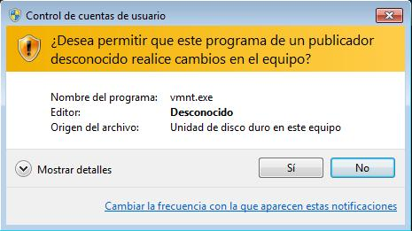

El UAC (User Account Control, Control de Cuentas de Usuario) es una característica de seguridad que se encarga de notificar alertas de seguridad del sistema al usuario. Lanza mensajes de alerta cuando se quiere realizar alguna acción que influya en el sistema, tal como la instalación de determinados programas, la modificación del registro de Windows, la creación de servicios, etc. User Account Control (UAC) es el responsable de mensajes como "Un programa no identificado desea tener acceso a este equipo" o "Necesita confirmar esta operación", y aunque, en ocasiones, estos mensajes pueden llegar a ser algo molestos, evita básicamente que se instale software sin el consentimiento del usuario.

Esta función de seguridad ya se encontraba en Windows Vista y Windows 7 la mejora, permitiendo al usuario una mayor configuración para reducir el número de alertas que aparecen.
Para acceder al UAC nos dirigimos al Panel de Control – Sistema y seguridad – Centro de Actividades – Cambiar configuración de Control de cuentas de usuario. En la siguiente imagen podemos ver su localización dentro de Sistema y seguridad.
{kind=link}
{kind=link}
Para configurar el UAC contamos con cuatro opciones:
- Notificarme siempre cuando:
- Un programa intente instalar software o realizar cambios en el equipo.
- Realice cambios en la configuración de Windows.
- Predeterminado: notificarme sólo cuando un programa intente realizar cambios en el equipo
- No notificarme cuando realice cambios en la configuración de Windows.
- Notificarme sólo cuando un programa intente realizar cambios en el equipo (no atenuar el escritorio)
- No notificarme cuando realice cambios en la configuración de Windows.
- No notificarme nunca cuando:
- Un programa intente instalar software o realizar cambios en el equipo.
- Realice cambios en la configuración de Windows.
En función de nuestras necesidades escogeremos una u otra opción.
Editor de directivas de grupo local y el UAC
También podemos editar el UAC desde el Editor de directivas de grupo local. Para ello, desde el campo de búsqueda del menú de Inicio, escribimos gpedit.msc y pulsamos Enter, se nos abrirá el editor de directivas. Dentro de éste buscamos la cadena Configuración del equipo – Configuración de Windows - Configuración de seguridad - Directivas locales - Opciones de seguridad y encontraremos varias entradas referentes al UAC.
Cada entrada indica su utilidad en su nombre, tendremos que decidir si se activan o se desactivan. En cualquier caso, es posible que los cambios requieran de un reinicio para funcionar. En la imagen podemos ver una de estas entradas del editor de directivas relativa al UAC.
{kind=link}